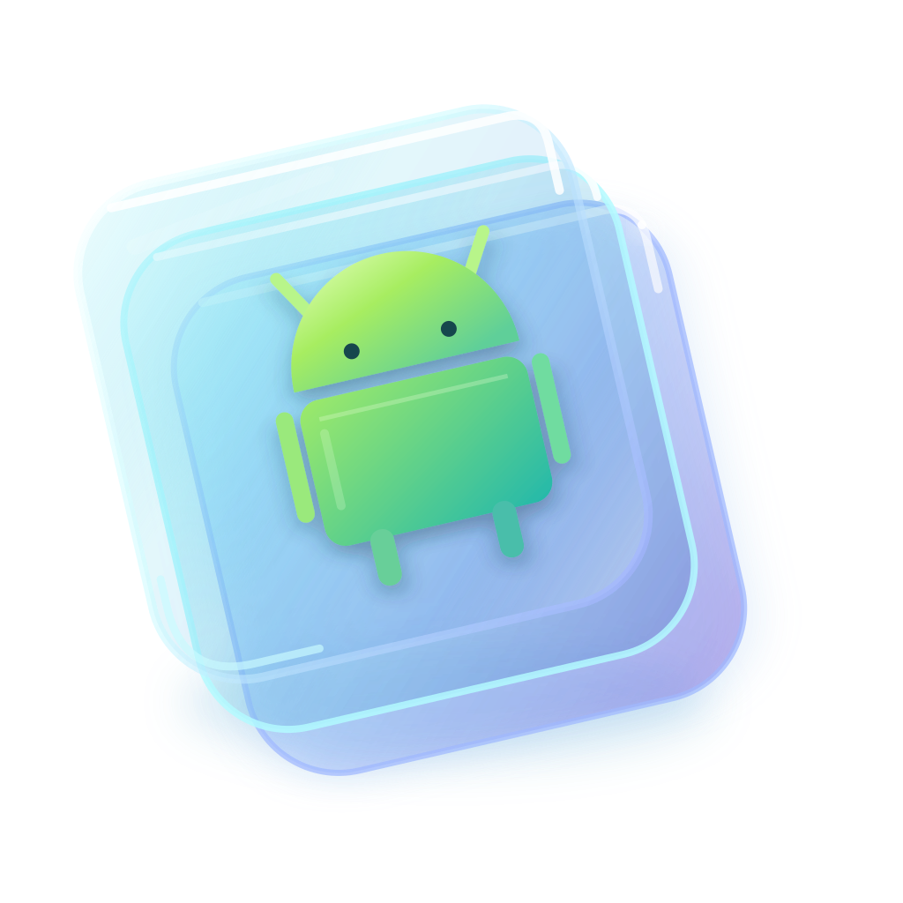
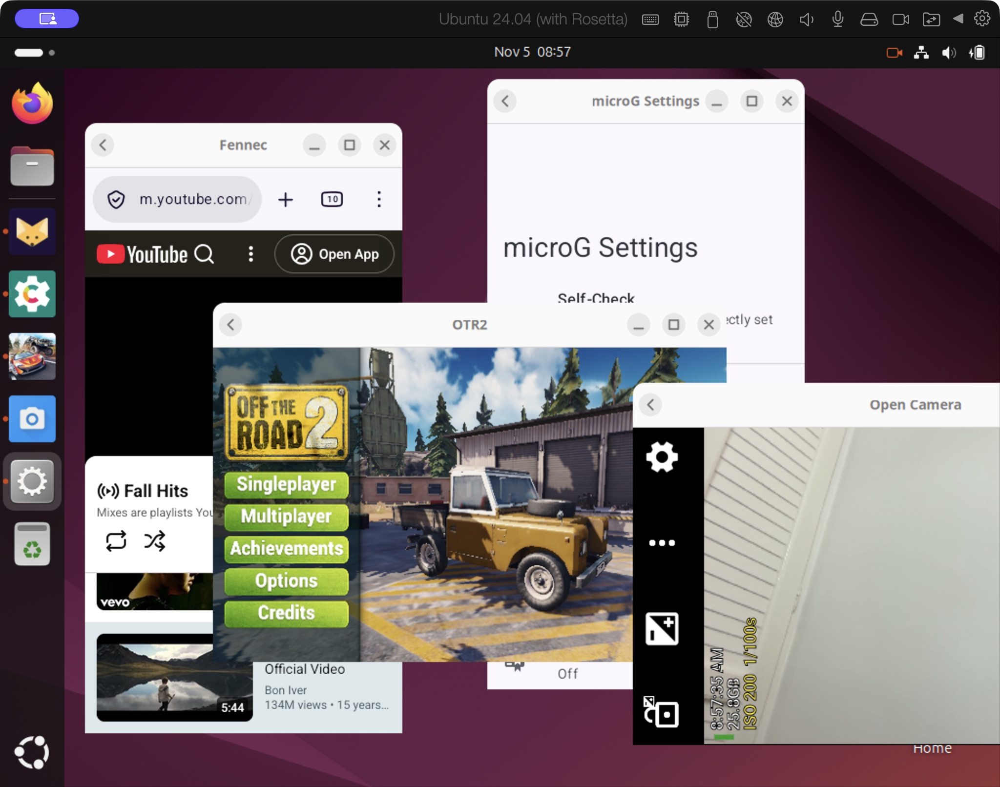
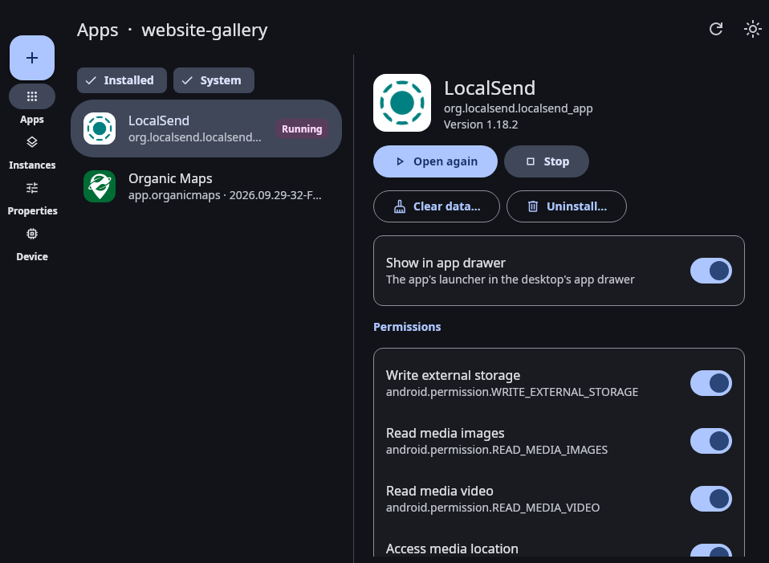
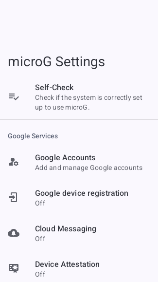

Your GPU, not a software renderer
Host EGL/GLES, Vulkan presentation, OpenGL ES 1, a GPU choice per instance and multi-GPU hosts. Software rendering when there is no GPU.

apklayerapklayer runs Android apps on Linux with Android's own libraries, the host's GPU and one Wayland window per app. No emulator. No virtual machine.

Dozens of apps draw and run; results per app are public in the compatibility table. Not every app works: check it there. Honest status: Punishing: Gray Raven (an anti-cheat-protected Unity game) reaches its title screen on x86_64 in 0.5.1, but logging in and playing is not verified; Google sign-in through Google's own apps is still unverified end to end.
The app's code is converted once and runs on the host's JVM against the real Android framework. Android's native libraries and services run as ordinary host processes.
Your APK's DEX code becomes JVM classes, once (dex2jvm).
Unmodified AOSP framework on the JVM, with Android's native libraries, SurfaceFlinger and Binder services.
Frames are shared as DMA-BUFs with the Wayland compositor; audio goes to PipeWire.
One window per app, host files, input, notifications and devices.
Details: architecture. On x86_64 hosts, arm64-only apps run through a binary translator (a "Lite translation" switch exists per app).
Host EGL/GLES, Vulkan presentation, OpenGL ES 1, a GPU choice per instance and multi-GPU hosts. Software rendering when there is no GPU.
Desktop windows or phone-style maximized apps with a navigation bar. Keyboard, mouse, touch, stylus, wheel and game controllers.
apklayer setup --microg or --gapps (Google Play services and Play Store). A Google Meet call with sound and video was checked with microG.
Scoped storage and file associations, USB host, Bluetooth, NFC tags, and a VPN for apps. Coverage varies by device: see the reference below.
PipeWire camera (Open Camera shows live frames), audio playback and recording, GStreamer codecs, sensors, GPS and vibration where the host has them.
Separate Android instances with their own data and accounts, side by side. Not a VM security boundary; an opt-in per-app sandbox exists.
An Ubuntu Touch click and a Sailfish RPM are built by the release workflow. Halium devices can use the phone's own GPU, camera and codecs.
A manager app for installs, permissions and instances; a CLI; apklayer report bundles logs for an issue.
Development builds captured 5 Nov 2026 on Ubuntu 24.04 arm64 in a VM.


Debian 13 and Ubuntu 24.04 packages for arm64 and amd64 (amd64 is marked experimental). Needs a Wayland session; the Android runtime is downloaded on first setup.
sudo apt install ./apklayer_*.deb
apklayer setupThen open apklayer from your app menu, or run apklayer install app.apk. Optional: apklayer setup --microg or --gapps for Google services.
Also built for each release: a Flatpak (any distribution), an Ubuntu Touch click and Sailfish RPMs, on the release page. Building from source: INSTALL.md.
Pick the file for your distribution and CPU. Checksums are in SHA256SUMS on the release page.
No. There is no emulated hardware and no virtual machine. The Android framework runs on the host's JVM, Android's own native libraries run as host processes, and graphics, audio and devices go through the host's standard interfaces.
Optionally. apklayer setup --gapps installs Google's Play services and Play Store from a LiteGapps package; --microg installs microG instead (one replaces the other). The 0.5.0 notes say the Play Store signs in and downloads; the project's plan still lists end-to-end Google sign-in with Google's own apps as unverified. Neither route is certified for Play Integrity or DRM.
No. Dozens of real apps are tested and the results, including failures, are public in the compatibility table. Games with anti-cheat, or apps that need Google integrity checks, may not work.
Not by default. Apps run as your user; instances separate app data but are not a VM security boundary. A per-app sandbox exists but is opt-in (APKLAYER_SANDBOX=1) and has documented gaps. Install apps you would trust on your desktop.
Release packages: Ubuntu 24.04 and Debian 13 on arm64 and amd64, a Flatpak, an Ubuntu Touch click, Sailfish RPMs. You need a Wayland desktop and a GPU with host EGL/GLES. Apps built for arm64 run natively on arm64 hosts and through a binary translator on x86_64.
There are no published benchmarks, so none are claimed here.
Yes, AGPL-3.0-or-later. Commercial licenses are also offered; see the repository's COMMERCIAL.md.
| Domain | Android-facing behaviour | Host integration & verification |
|---|---|---|
| Sensors | Real Android SensorManager and SensorService above an AIDL sensors HAL. sensorfw can supply accelerometer, gyroscope, magnetic field, light, pressure, and proximity readings when available. | sensorfw uses the OS sensor daemon; iio uses iio-sensor-proxy for device orientation, light in lux, and proximity. Orientation-only data is not advertised as acceleration. Host backend tests cover both service protocols; fixed-value providers support deterministic tests. |
| Vibrator & haptics | Android Vibrator calls reach an AIDL HAL, including timed vibration and supported effects or waveforms. Strength and effect coverage follow the backend. | Ubuntu Touch’s hfd, feedbackd, and writable Linux force-feedback devices (FF_RUMBLE); selected device HALs through the host Binder context. Host protocol tests and a real Ubuntu Touch vibrator call are documented. Advanced effect composition remains incomplete. |
| GPS / GNSS & location | GNSS-backed GPS fixes reach LocationManager through the instance hub. A shared GNSS client serves multiple apps while they request location. | geoclue for GeoClue 2, geoclue1 for Sailfish’s service, and lomiri for Ubuntu Touch. Real fixes were checked on Ubuntu Touch; the Sailfish backend has stand-in tests pending a device build. Fixed coordinates and GPX replay are available for tests. No fabricated GPS fix is returned before a real backend has one. |
| USB host | UsbManager device enumeration, attach/detach intents, permission requests, configurations, interfaces, endpoints, and real UsbDeviceConnection JNI. | Linux sysfs descriptors and /dev/bus/usb access, with udev permissions for the desktop user. The Gadget Zero test exercises control transfers, bulk loopback, UsbRequest, interface claims, detach, and attach-triggered launch. No separate Android USB HAL is needed. |
| Bluetooth | Adapter state, bonded devices, discovery, filtered BLE scanning, pairing, GATT connections, service discovery, characteristic reads and notifications, and RFCOMM client sockets. | The hub bridges Android APIs to BlueZ over D-Bus, enforcing Android scan permissions. Automated BlueZ stand-in tests cover discovery, GATT, pairing, adapter changes, and permission refusal; a real BLE scan on the x86_64 PC found devices. This is not a claim of every Android Bluetooth profile. |
| Android Keystore | The AndroidKeyStore provider uses Android’s keystore2 and software KeyMint, with persistent keys and per-app key namespaces. | Tests exercise AES-GCM, HMAC, RSA, and EC keys, persistence across launches, and separation of the same alias between apps. This is software-backed storage, not a promise of a TEE, StrongBox, hardware attestation, or complete biometric/auth-bound key support. |
| Battery & power state | BatteryManager properties and battery-change broadcasts reflect the host’s battery presence, charge, charging state, and supplied voltage/temperature data. | Linux /sys/class/power_supply with udev change events. A desktop without a battery reports mains power. The devices test checks host-facing state rather than assuming an emulated phone battery. |
| Network connectivity | ConnectivityManager receives the active network, addresses, routes, DNS, and change callbacks; apps use the host’s networking. | The default-route interface supplies the current network; ip monitor propagates route/address changes. The devices test compares Android LinkProperties with Linux. Multiple simultaneous Android network representations and modem/SIM telephony are not currently provided. |
| Workload | Examples | What has been observed |
|---|---|---|
| Android UI & storage | Thunderbird, Feeder, Tasks.org, KeePassDX, Material Files | Compose and traditional views render; welcome screens, lists, and file or vault choosers are visible. Android providers supply settings, contacts, calendar, media, and documents. |
| Native code & graphics | Organic Maps, OsmAnd, VLC, mpv, OpenTTD | Native libraries load; maps and players draw. OpenTTD renders through GLES 1 on the tested PC, with a known shutdown issue. APK native ABI must match the runtime or use an available native bridge. |
| Flutter & web-based UI | FluffyChat, LocalSend, Standard Notes, Logseq | Flutter apps draw through GLES; React Native and WebView-based screens are exercised. Apps embedding web content need the Android WebView provider installed in the runtime. |
| Messaging & accounts | Element, Telegram, Conversations, Google Meet | Messaging welcome/login screens render. Meet sign-in and a call with sound and remote video have been checked with microG. This does not imply certified Google Play Services or Play Integrity support. |
| Media & capture | NewPipe, Fennec, Open Camera | NewPipe lists and plays video; Fennec has page, audio, and video checks. Open Camera shows live PipeWire camera frames. Browser text rendering has a known virgl-specific GPU issue. |
apklayer supports microG Services together with microG Companion (com.android.vending). The manager’s first-run setup offers these optional components. The instance hub supplies Android account, service, activity, and cross-app plumbing so apps can reach microG rather than just render a sign-in button.
Google sign-in and account loading have been exercised with Meet; an owner-verified call joined successfully with sound and remote video. Install both Services and Companion in the app library, then configure microG in the instance where you use the app.
microG implements parts of Google Play Services. Support remains app- and feature-dependent: this does not certify the runtime for Google Play, guarantee Play Integrity or DRM, or imply that every Google API, push-notification flow, or banking app has been verified.
Follow microG and app integration status| Layer | apklayer | Waydroid ↗ | ATL ↗ |
|---|---|---|---|
| Execution model | DEX converted to JVM bytecode; HotSpot hosts the AOSP framework with Robolectric shadows. | A full Android system boots inside an LXC container, sharing the Linux kernel. | DEX runs on an Android runtime, against ATL’s replacement Android API implementations. |
| Framework & services | AOSP android-all plus real Android native libraries and selected services as host processes; a hub coordinates apps. No system_server or Android zygote. | The Android framework, ART, and system services run inside the Android container. | Android APIs are implemented or stubbed by ATL; UI widgets map to GTK, with native shims for app libraries. |
| Desktop & hardware | SurfaceFlinger → apklayer composer → Wayland windows; host EGL/GLES, PipeWire, GStreamer, and platform providers. | Android graphics and HAL integration connect the container to host hardware and Wayland; desktop integration can expose individual app windows. | GTK owns desktop integration; EGL supports native graphics paths. API coverage grows through project implementations. |
| Main compatibility dependency | Bytecode conversion, framework shadows, native library integration, and host HAL/backend coverage. | The Android image, container/kernel support, GPU/HAL integration, and any required app services. | Whether ATL implements the framework APIs, widgets, and native interfaces that an app needs. |
All three avoid a hardware-emulating VM in their normal design. Waydroid also supports app windows; that alone is not the distinction. apklayer retains Android’s rendering and native service stack while changing how Java code is executed and how hardware is reached.
Everyone who has committed to the repository, from GitHub. Thank you.
Open work only, straight from the project's plan.